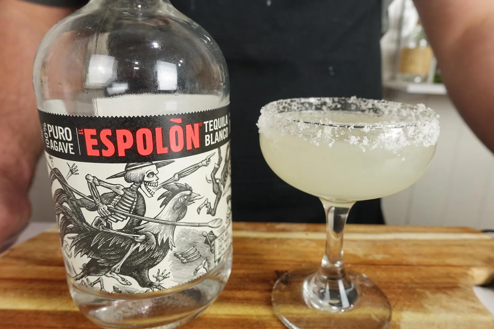

Margerita
From stevethebartender.com.au

Description
The classic Margarita recipe is a simple 3:2:1 ratio of strong,
sour and sweet. No need for adding extra simple syrup as the
sugar content of the triple sec/Cointreau balances the sour.
Margaritas are a party drink so I like to serve them in an old
fashioned glass over ice!
Ingredients
- 1 1/2 shots blanco tequila
- 1/2 shot triple sec
- 1 shot fresh lime juice
Steps
-
Rim the glass with salt - moisten the glass with a piece of
lemon or lime and place upturned onto a plate of salt
- Combine all ingredients into your cocktail shaker
- Shake with ice
- Strain into a chilled coupe or margarita glass
- Garnish with a lime wedge or wheel